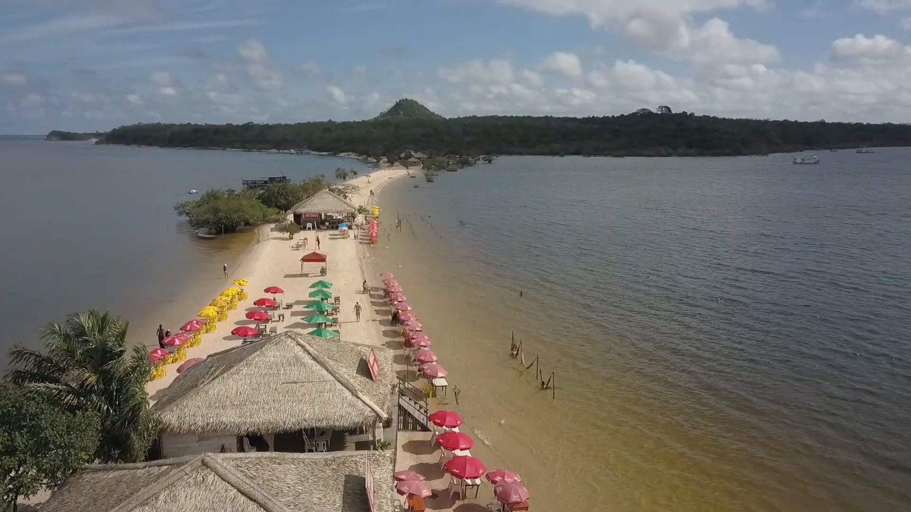
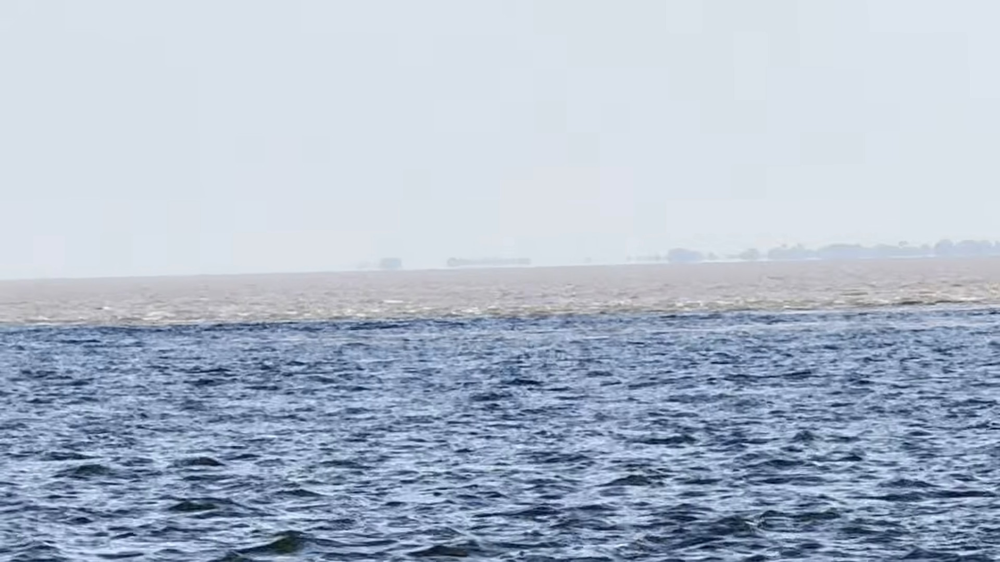
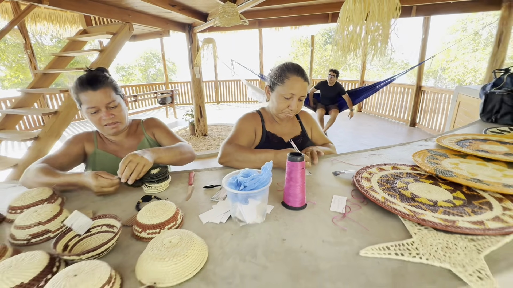
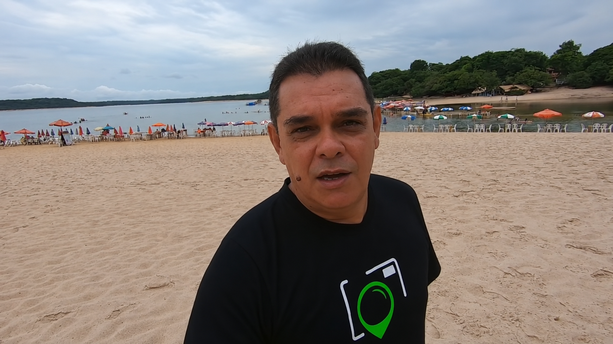

Rios e praias
Alter do Chão
Águas, areia e histórias às margens do Tapajós.


Histórias que nos levam mais longe
Pelos rios, cidades e comunidades, descubra a região através de quem vive e conta suas histórias.
Um olhar de dentro
Tem lugares que a gente conhece pelo caminho. E histórias que só fazem sentido quando ouvimos quem vive nelas.
Com Emanuel Júlio, o Turismo Aqui mostra a Amazônia de perto: suas paisagens, sua cultura e as pessoas que fazem cada encontro valer a viagem.
Águas, areia e histórias às margens do Tapajós.

Onde os rios se encontram e a vida acontece.

Saberes e encontros que dão vida à região.

Nossa história
Desde 2017, Emanuel Júlio percorre rios, estradas e comunidades para mostrar os lugares e as pessoas que fazem da Amazônia um mundo de histórias.
O que começou com os caminhos de Alter do Chão ganhou novos horizontes, sempre com curiosidade, proximidade e vontade de compartilhar o que existe por aqui.
Uma seleção de registros do canal; o total de municípios visitados pode ser maior.
Inspire sua próxima viagem
A viagem continua
Vem acompanhar as próximas histórias com a gente.
Acompanhar o canal